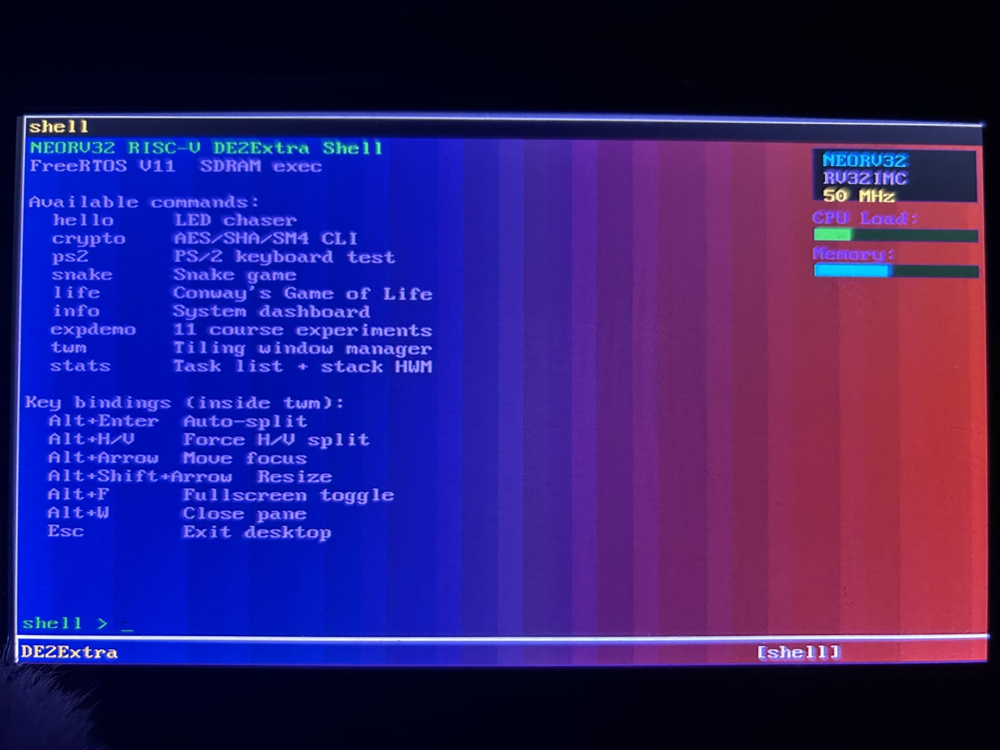
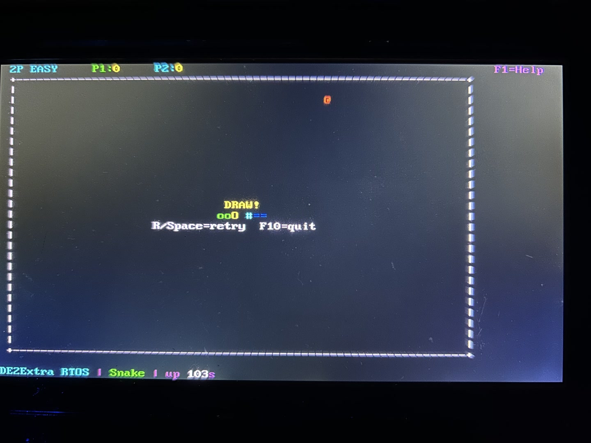
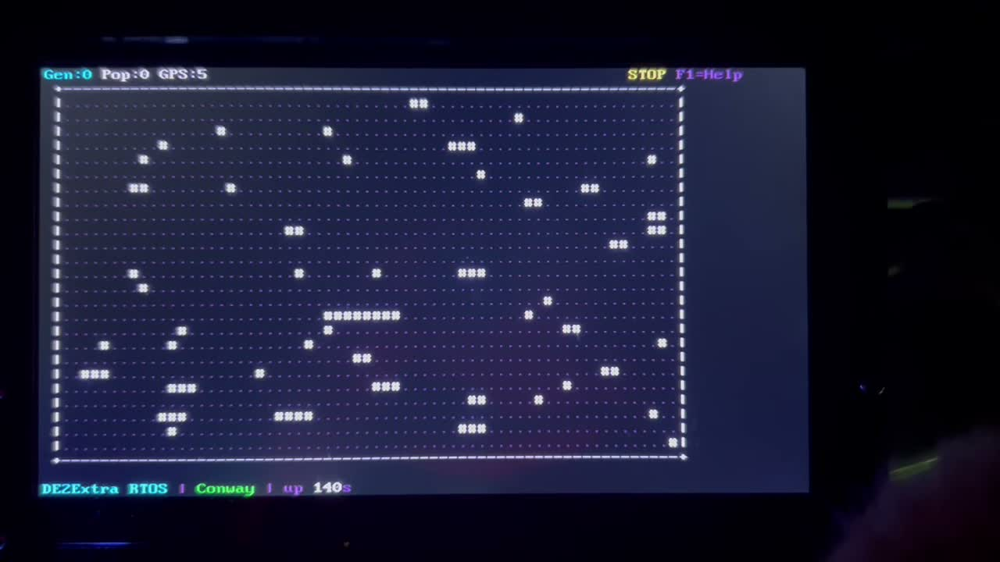
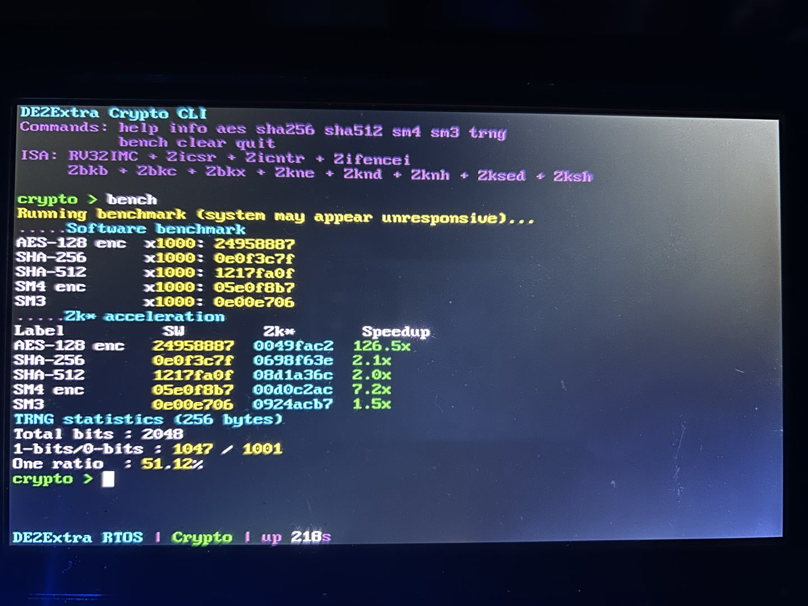
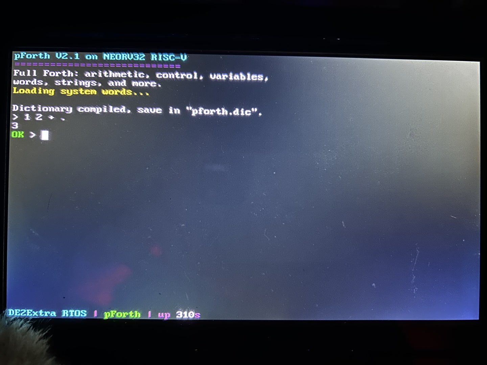
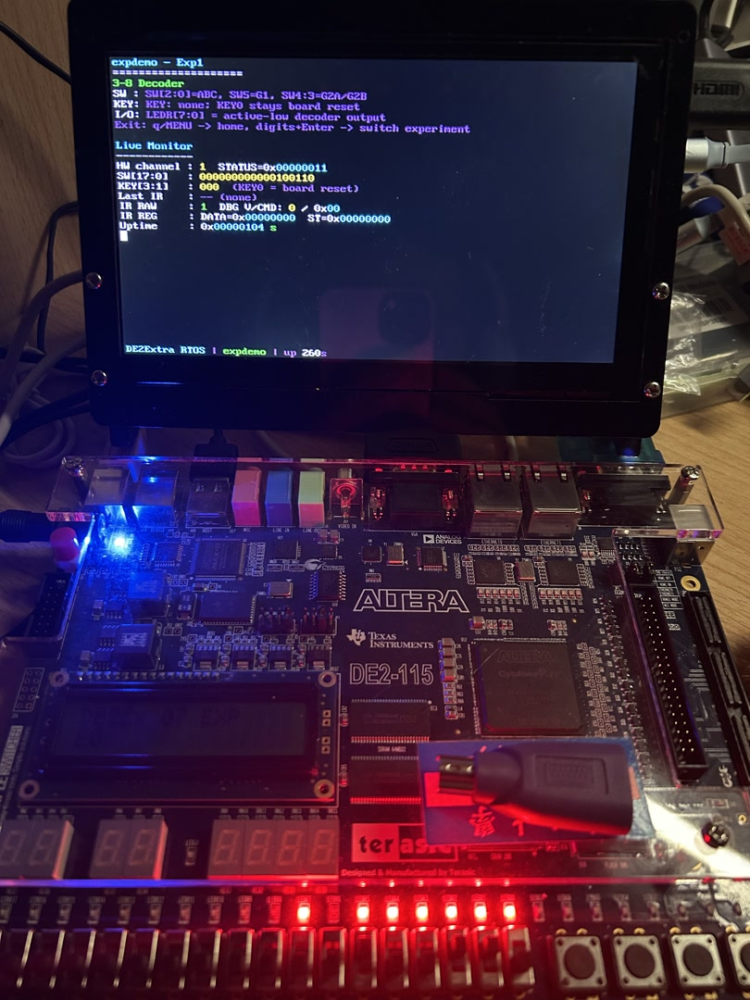

在 DE2-115 开发板上构建的完整 RISC-V 计算机
NEORV32 软核 · 10 active Wishbone 外设 · FreeRTOS · VGA 终端 · PS/2 键盘
DE2Extra 是一个基于开源 NEORV32 RISC-V 处理器核的完整 SoC 系统，运行在 Altera DE2-115 FPGA 上。围绕开源 CPU 核心自研了 10 个活跃 Wishbone 外设 IP、SoC 互联、FreeRTOS 固件及 22 个命令行应用——从 RTL 到 C 代码的全栈工程实践。
交互程序: F1=帮助 F10=退出





pForth V2.1 · 交互式栈计算器 · 支持 DEF 自定义词 · PS/2 输入

LED 流水灯 / 按键消抖 / 计数器 / 分频器 / PWM / 7-SEG / VGA demo 等
AES 硬件加速通过 NEORV32 Zknd/Zkne 指令实现，单块加密仅需 ~480 周期。
Boot mode 0: 2KB IMEM bootloader → UART 上传 → SDRAM 执行，无需 Quartus 重编译。
现场演示 hello · snake · conway · crypto · pforth · expdemo